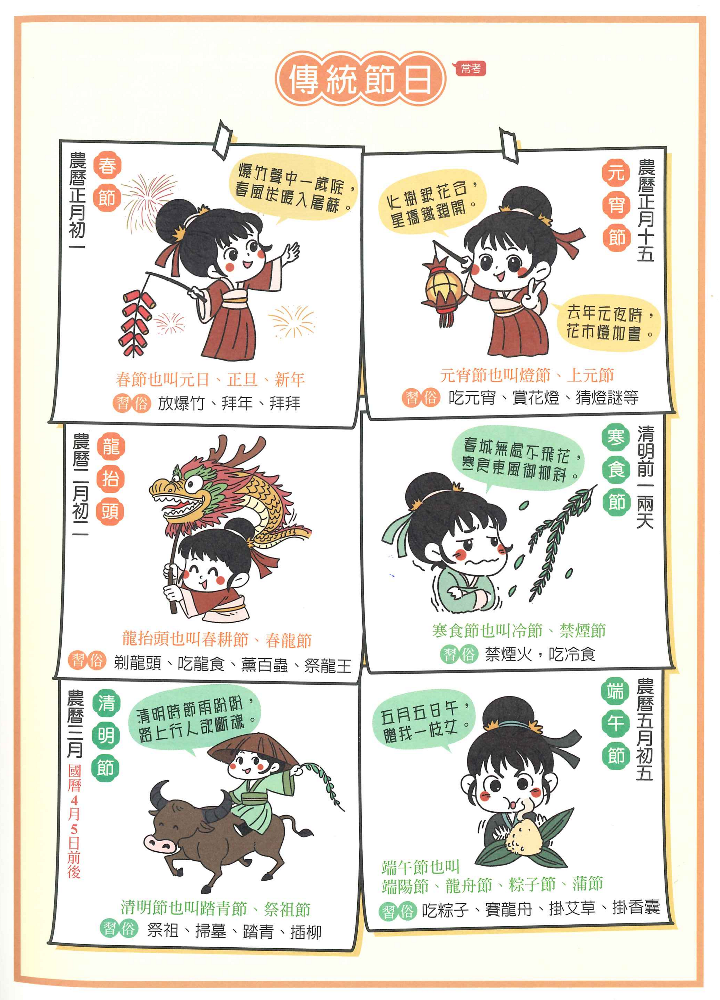
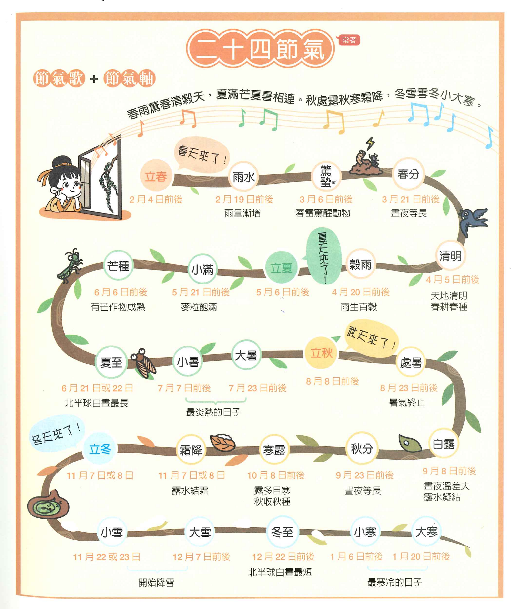
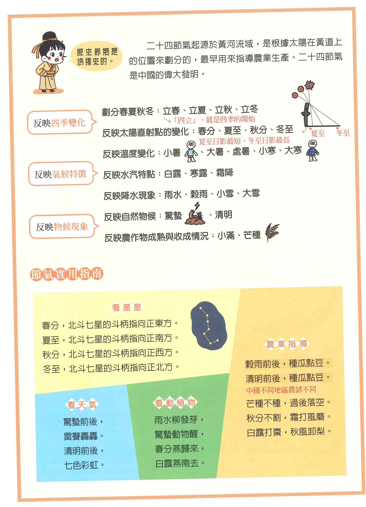

歲月流轉・天地同歌
結合國文科詩詞意境（點擊查看白話語譯）與自然科天文曆法，徹底搞懂「農曆、陽曆、月相盈虧與二十四節氣」的會考核心密碼！
單元一：曆法大解密（觀念破解）
打破迷思！二十四節氣不是看農曆，而是看太陽的「陽曆」！
陽曆（太陽曆）
俗稱：國曆、公曆、西曆
依據地球繞太陽公轉一週（約 365.2422 天）制定。特點是四季氣候分明，春暖夏熱秋涼冬冷皆與陽曆日期高度吻合。
☀️ 代表項目：二十四節氣（立春、清明、夏至、冬至等）
📌 關鍵特性：公曆日期幾乎固定（誤差僅 1~2 天）
陰曆（太陰曆）
純月亮曆法（如伊斯蘭曆）
完全依據月球繞地球公轉之月相盈虧（朔望月約 29.53 天）制定。每月初一為朔（無月），十五為望（滿月）。但一年僅約 354 天，與四季脫節。
🌙 核心優點：與潮汐高低潮、夜間照明極度契合
⚠️ 問題：每過三年會比太陽年少約 33 天，季節會漂移
農曆（陰陽合曆）
俗稱：舊曆、夏曆、漢曆
中華先祖的偉大發明！以月相定月份（初一為朔，十五為望），同時設置「十九年七閏」的閏月機制來調和太陽回歸年，兼顧月相與四季。
🏮 代表節日：春節、元宵、端午、七夕、中秋、重陽
💡 關鍵特性：農曆日期固定，但在陽曆（國曆）上每年日期都不同
會考魔王觀念：節日 vs 節氣比較器
點擊下方切換案例，觀察為什麼「中秋節的國曆每年都在跳」，而「清明節的國曆每年都固定在 4/4~4/6」！
單元二：十大傳統節日與經典詩詞（附白話語譯）
掌握習俗關鍵字，一秒破解會考「節日判讀」題！
【主題式國學常識】傳統節日圖解總覽

點擊放大全螢幕檢視
📖 教材參考：《主題式國學常識》（小五南）｜ 彙整春節、元宵、清明、端午、七夕、中秋、重陽之時間、習俗、代表食物與應景詩詞。
單元三：二十四節氣與四季流轉（附白話語譯）
太陽在黃道上每移動 15° 為一節氣，是古代農耕的超級指南！
【主題式國學常識】二十四節氣圖解總表（春夏篇 ＆ 秋冬篇）

點擊放大（春夏季）

點擊放大（秋冬季）
📖 教材參考：《主題式國學常識》（小五南）｜ 完整收錄立春至穀雨、立夏至大暑、立秋至霜降、立冬至大寒之氣候物候、農事與生活意涵。
單元四：會考「詩詞密碼」破解獵手（20 題精選）
點擊「查看白話語譯」可開啟翻譯；點擊「查看密碼解析」解鎖節日答案！
💡 自主學習指引：先閱讀原詩嘗試自我解讀，若有生詞可點擊「📖 開啟語譯」；思考答案後，再點擊「🔑 密碼解析」核對關鍵字！
單元五：會考神射手（10 題跨科互動測驗）
挑戰 10 題會考等級跨科精選試題，測試你的掌握度！
題目載入中...
測驗挑戰完成！
100 分
會考時序狀元 🌟
太厲害了！你已經徹底掌握了傳統節日與節氣的奧秘。
單元六：時序之美語文學習集練習神器
二十四節氣記憶閃卡、經典節慶詩詞句測驗庫，支援自選模式、翻卡闖關與錯題自動診斷